從龍到獸 大滅絕與大演化特展
只差最後一步，地板卻塌了
從龍到獸｜30m巨龍化石、6米獨立牆體，與一場布展尾聲的搶救行動
《從龍到獸》是國立自然科學博物館歷年規模最大、規格最高的一次國際級特展。甘肅地質博物館與和政古動物化石博物館的百餘件珍稀化石跨海而來，其中包含亞洲迄今發現體型最大、保存最完整的蜥腳類恐龍–全長30m的炳靈大夏巨龍，再加上科博館自己館藏的140餘件重要典藏，許多展品是第一次離開中國大陸公開展出。我們承接這場展覽的全場統包工程，涵蓋展示結構、特製展櫃、燈光與視覺整合、地坪與戶外耐候工程–面對國際級文物的高規格保存標準、緊湊工期，以及高度複雜的跨領域工種整合，這從一開始就不是一個能靠經驗值蒙混過去的案子。
六米高的牆，不能靠在任何東西上
龍廳是全場的核心，一面高達6m的獨立展示牆體，必須在完全不倚靠、不破壞既有建物結構的前提下，自己扛起巨型恐龍化石本體與重型鐵件骨架的龐大懸吊載重。我們透過精確的結構重心計算與力學分佈分析，採自承重獨立式結構工法–這面牆自己就是一套完整的結構系統，撐得住三十m的巨龍，卻不曾真正「靠」在博物館的任何一根樑柱上。
封膠那一刻，容不下第二次機會
依循國際博物館文物保存規範，化石定位完成後，展櫃玻璃要進行一次性封膠–從封上的那一刻起，直到展期結束前都不能再打開。這代表在封膠之前，燈具投射角度、色溫、展櫃內的微氣候濕度控制、飾面平整度，所有細節都必須一次到位。沒有「先封起來，之後再調整」這回事，每一項參數都是最終答案，考驗的是工藝精度與品質控管能不能在同一瞬間全部到位。
讓地質年代，變成看得見的顏色
我們運用7種以上的展櫃專屬配色與專業照明系統，用色彩與光學去隱喻不同的地質年代，清楚區分出各個化石群與演化階段，讓觀眾不需要讀完整面說明牌，也能靠著光線與色調的變化，感覺到自己正走過一段跨越億萬年的旅程。腳下的路也經過同樣的計算–高強度架高木地板系統無縫嵌入隱藏式LED導光條，同步兼顧展場氛圍照明與大量人流的安全動線導引；戶外延伸展區則另外執行高標準防潮、抗UV與耐候塗裝，確保木作地坪與展示構件在長期日曬雨淋下不變形、不褪色。
只差最後一步，地板卻塌了
布展工程幾乎完成，館內一座早期封閉、多年未使用的樓梯結構突然失穩，造成展廳局部地坪坍塌。先完成安全性修補，上方滿鋪地毯覆蓋，確保開展如期、動線安全；永久性修復則留待展覽結束後由館方依標準程序處理。最終以零工安事故、零工期延誤交付，三十m的巨龍準時抵達展廳。
有專案想討論？
聯絡我們
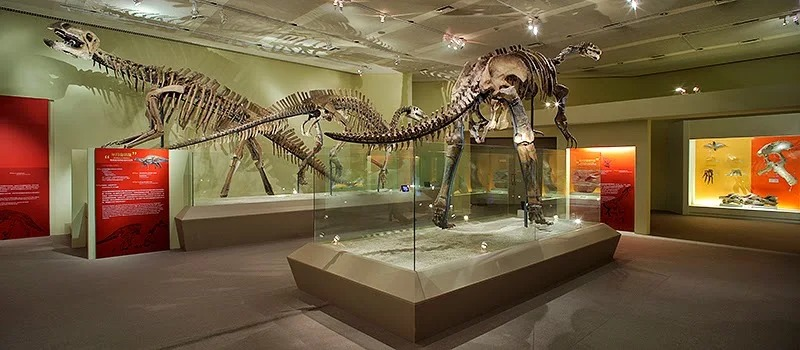
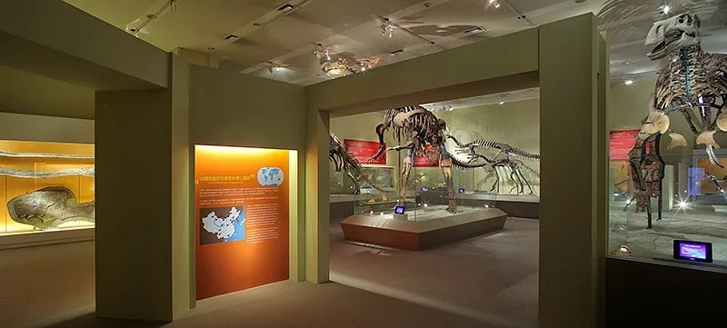
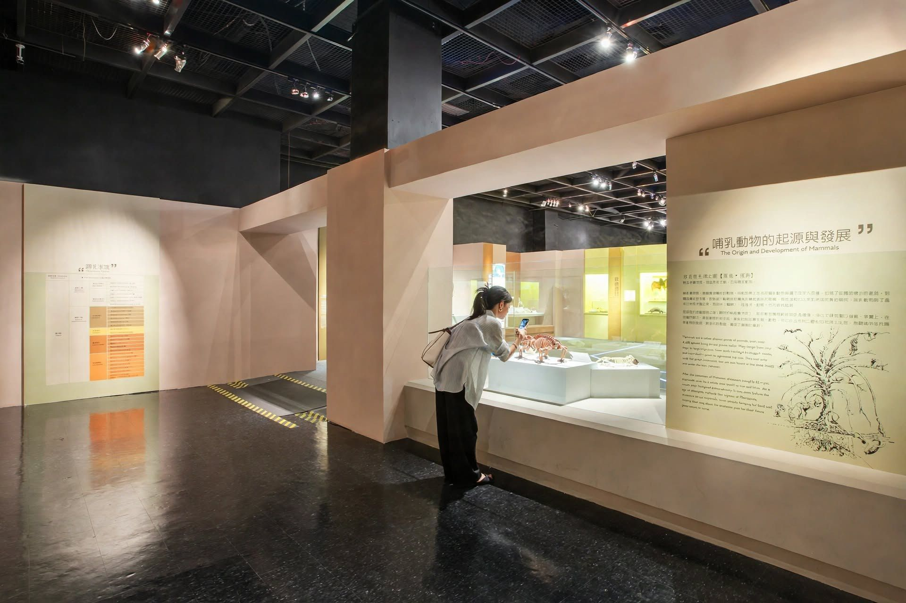
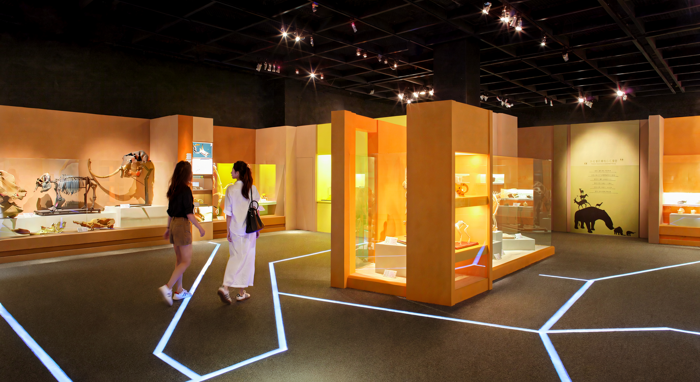
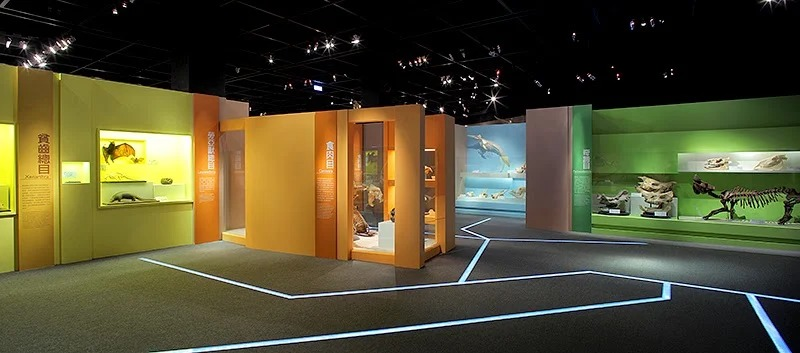
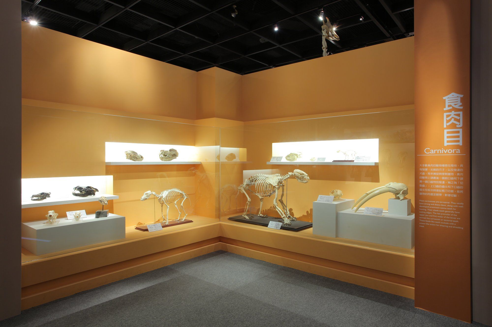
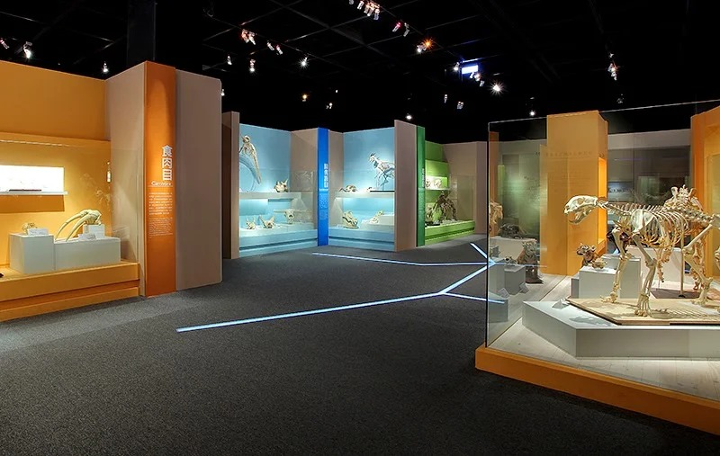
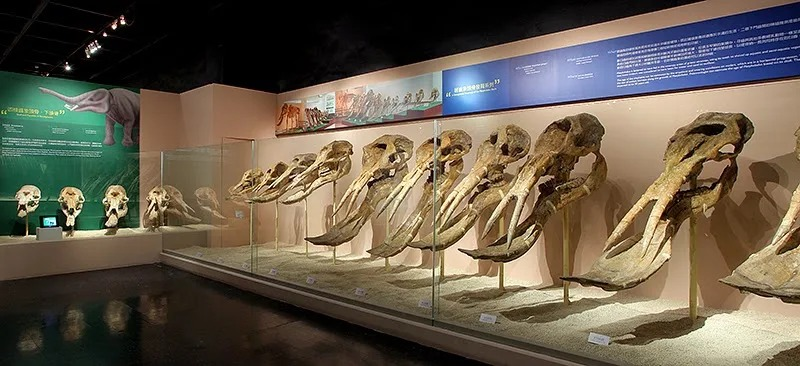
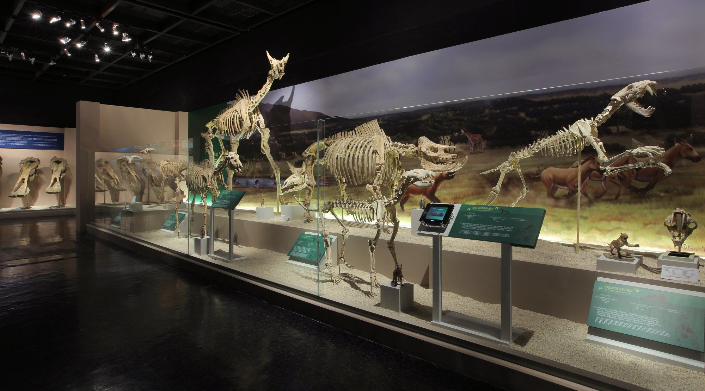
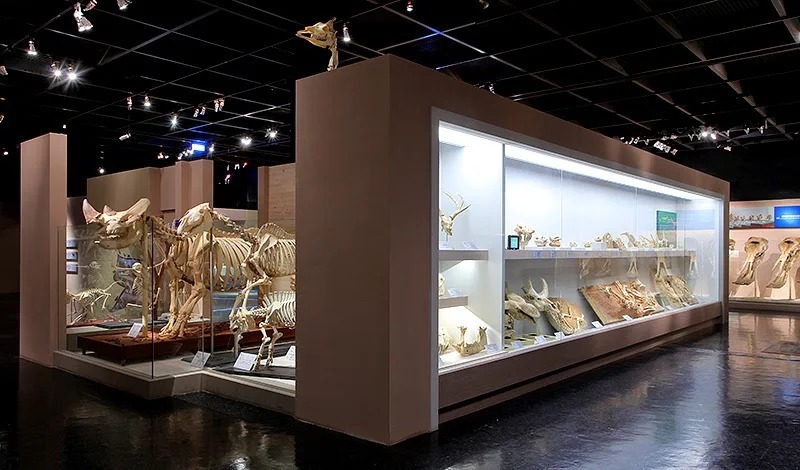
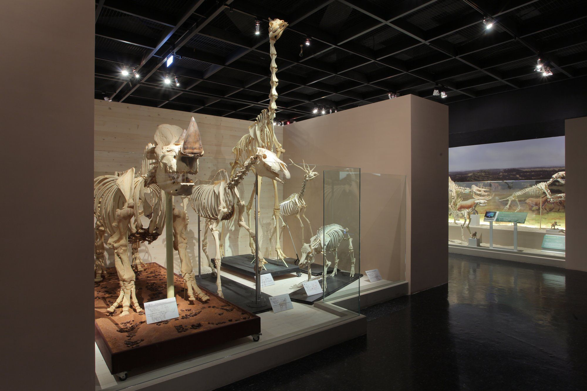
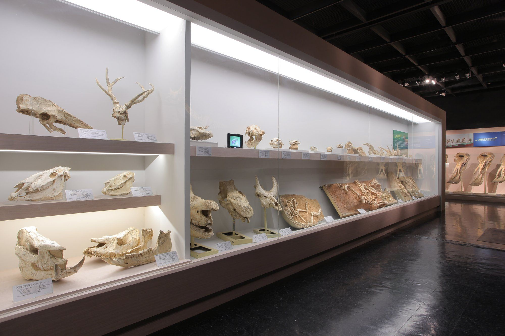
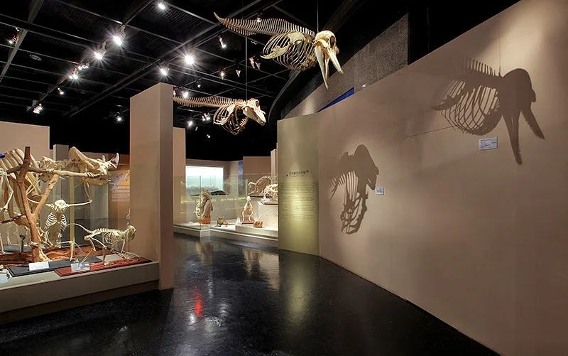
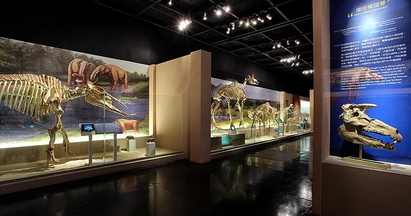